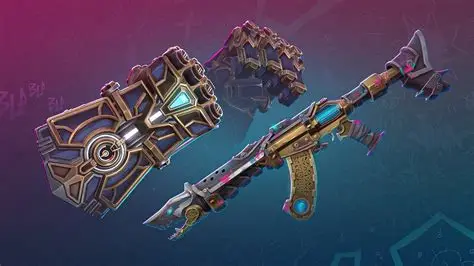

🎒 Meu Inventário — Rico no Vava

👕 Skins Raras que Comprei ou Ganhei
- Skin de Vandal Saqueadora - Rara
- Skin de Phantom GlubGlub - Rara
- Skin de Faca Kuronami - Rara
- Skin de Sheriff Kuronami - Rara
- Skin de Sheriff Neoeste - Rara
🏆 Youtubers Aurudos
- F0rsaken - Melhores analizes
- TCK - Streamer
- FRT - Ensina a melhorar
- Cremosa - Ensina pixels e combinações
🎯 Skins Que Eu Tenho Por Arma